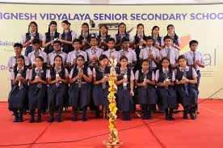
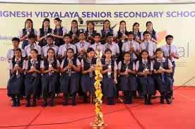

The teaching methodology is very simple, student oriented and involves student interaction. Work sheets are given to motivate the students to spend more times for studies with full enthusiasm. The curriculum also concentrates on spiritual aspects to make a child morally, socially, physically a knowledgeable person with full fledged personality.
Saturday CCA classes in an informal atmosphere make activity based learning, very interesting.
Assessments and Tests are conducted as per the guidelines of the Central Board of Secondary Education-New Delhi and parents are called after each assessment, to the school, to meet the teachers concerned for discussion about the progress of their children.
The school also focuses on Extra curricular activities, which is the need of the hour to develop the all round abilities of the students.
 
